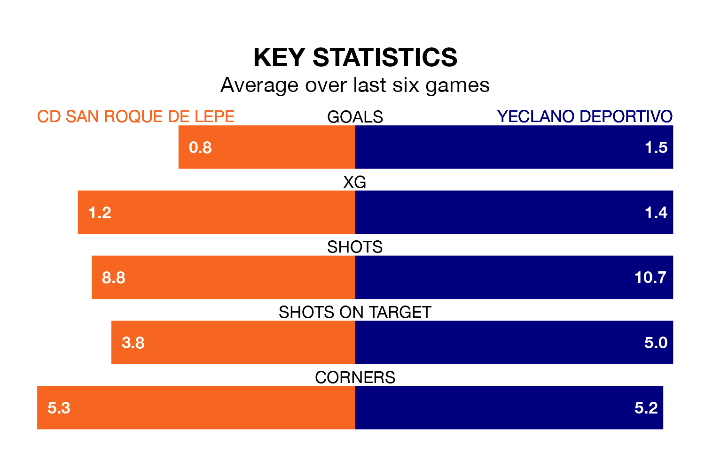

Mid-season relegation candidates CD San Roque de Lepe face a challenge against high-flying Yeclano Deportivo at the Estadio Municipal Ciudad de Lepe on Sunday.
CD San Roque de Lepe are 15th in the Segunda División RFEF Group 4 table, and have picked up five wins and five draws in their 21 games to date.
Yeclano Deportivo, meanwhile, are second in the standings with 44 points, having won 13 and drawn five, and are level on points with table-toppers Sevilla B.
With 29 goals in 21 games so far this season, Yeclano Deportivo are the league's second-highest scorers with 1.4 goals per game. And they are conceding fewer than average, letting in 16 goals at a rate of 0.8 per game.
San Roque de Lepe, meanwhile, are below average scorers, with 0.9 goals per game, compared to a league average of 1.0. They have conceded 1.0 goal per game.
The home team are in disappointing form in Segunda División RFEF Group 4, with two wins and four losses from their last six games.
With five wins and a draw over that period, the visitors' form is much better – they have taken 16 points from 18, compared to San Roque de Lepe's six.
In the last three years, San Roque de Lepe and Yeclano Deportivo have played each other on three occasions. Yeclano Deportivo won two of them and they drew once.
Their last meeting was on September 30, when Yeclano Deportivo won 1-0 at home.
San Roque de Lepe's last match was on February 4, a 1-0 loss against Real Betis B.
Yeclano Deportivo drew 0-0 with Racing Cartagena MM last time out, also on February 4.
Updated: 10:01 (UTC), 06/02/24